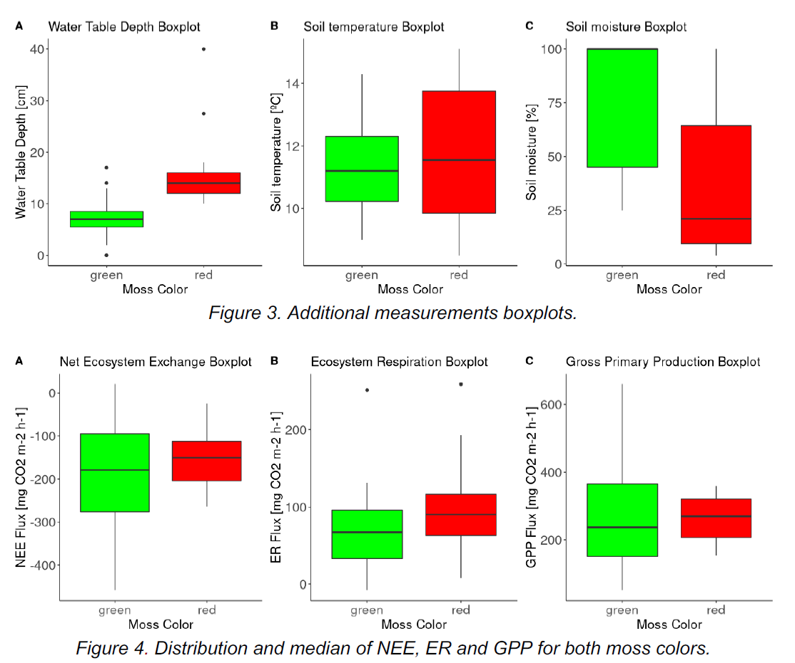
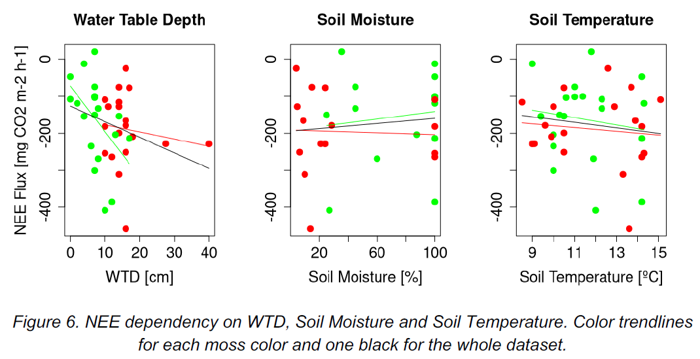

Content
1. Filed work study: Greenhouse gases, Biogeochemical, Sphagnum
2. Climate change and its impacts: Using LPJ-GUESS
3. Extreme event study
4. Climate model study
5. Impacts of climate change on agriculture in Ukraine (literature review)
6. Ecosystem modelling: Biome Modelling
7. Ecosystem modelling: Sensitivity analysis
8. Ecosystem modelling: hydrology model
9. Remote sensing: Lunds Kummon project
10. Remote sensing: Timeseries (Using TIMESAT)
11. Programming in GIS and remote sensing: Application project (Using Python)
12. Global ecosystem dynamic: Cropland management (Using Matlab)
Course works and projects: Greenhouse gases and biogeochemical cycles, NGEN14, Lund University
The effect of abiotic factors on the exchange of greenhouse gases in red and green Sphagnum mosses on the Fäjemyr peat bog in Skåne, Sweden (Field work of biogeochemical course)
Intro:In this field work study, the chamber method is used to measure and compare methane and CO2 fluxes of two varieties of Sphagnum moss (red and green one) in Fäjemyr in southern Sweden. Our results do not agree with many previous studies that cite water table depth as the main driver of methane concentration in Sphagnum; it is instead found that the processes of methanogenesis, methane oxidation and photosynthesis are too complex to be attributed to just one abiotic factor.
Some insights: Below (noted Figure 3 and 4) depicts how abiotic factors vary between the moss patches. The box plot of NEE (Figure 4.A) shows a greater interquartile range in the green moss, a median of -151 mgCO2 m-2 h-1 for the red and a slightly greater NEE (more negative) for the green (-179 mgCO2 m-2 h-1). For both ER and GPP (Figures 4.B and 4.C) the interquartile range is higher among the green plots, but the median is greater in the red.

Both colors of Sphagnum show a weak to medium correlation between NEE and soil moisture (noted Figure 6), with a R2 of 23% for the red patches and 41% for the green. It is apparent that the green moss was much wetter than the red (with the exception of 100% soil moisture in the red moss after a high amount of rainfall), which confirms the Wilcoxon result. Neither temperature nor water table depth show significant correlation with NEE. For all green samples with a NEE ~ -400 mg CO2 m-2 h-1, very sunny conditions were noted.

Group 1 in module Greenhouse gases and biogeochemical cycles, NGEN14
Zhicong Xie, Maja Holm, Emily Register, Salvador Hernández, 2021